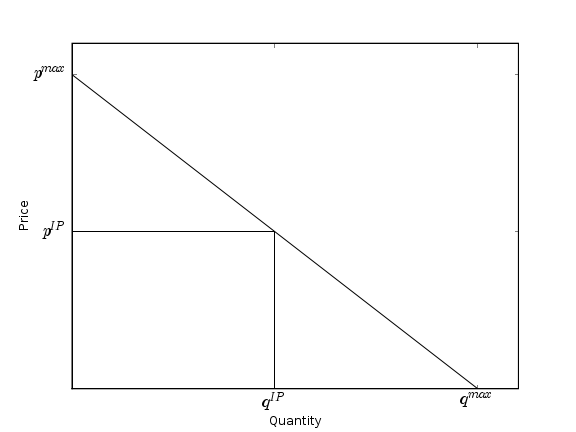
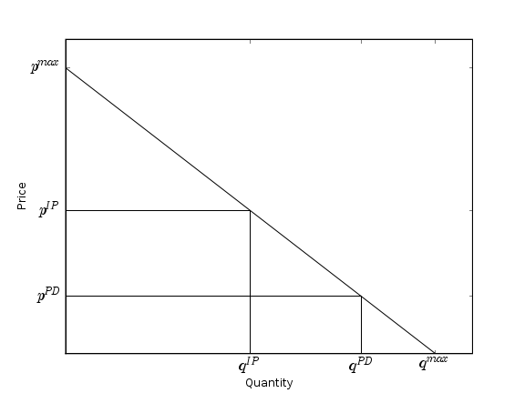
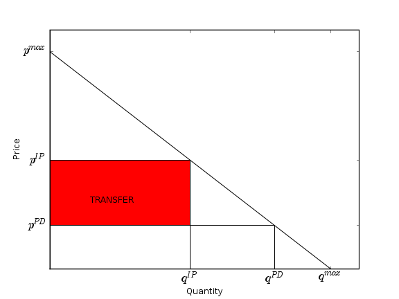

Musicians, Fans and Online Copyright
How Can We Maximize Copyright's Return to Society?
Rufus Pollock
[Emmanel College, Cambridge University]
Whose Interests?
Society's ...
The Endless Talk of Balance
Rightsholders vs. Consumers etc
Entirely Mistaken
Essentially only one Group We Need to Care About
Citizens/Consumers
They Already Care About Both Sides
A. Production (no works produced then nothing to enjoy)
B. Use (higher price means less access)
Remember: Only Care About 'Producers'
In so far as they produce works we want
(What about producer surplus (profits)? Nothing special: they're just transfers from consumers)
Remember: Only Care About 'Producers'
In so far as they produce works we want
(What about producer surplus (profits)? No, not really: they're just transfers)
Copyright Welfare Analysis 101


